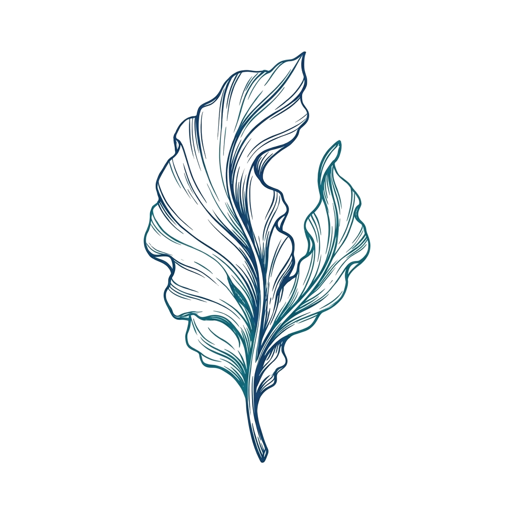
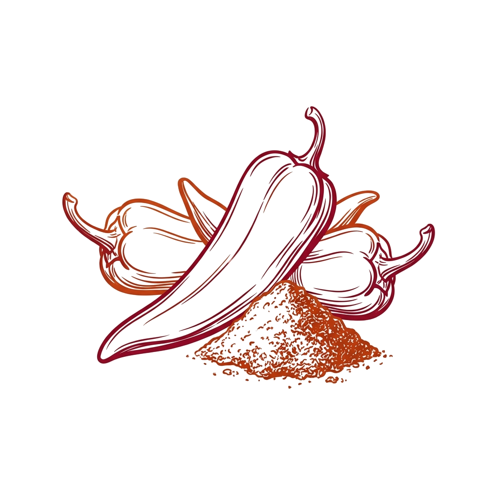
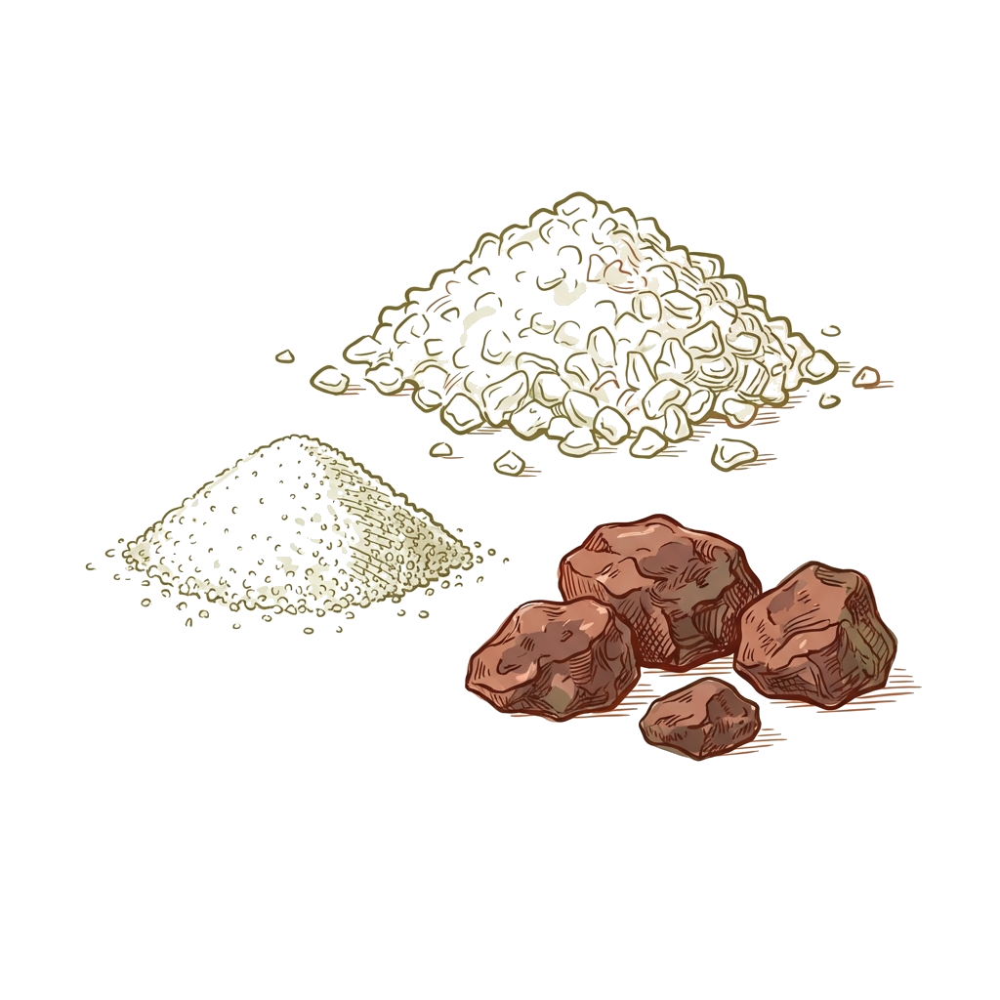
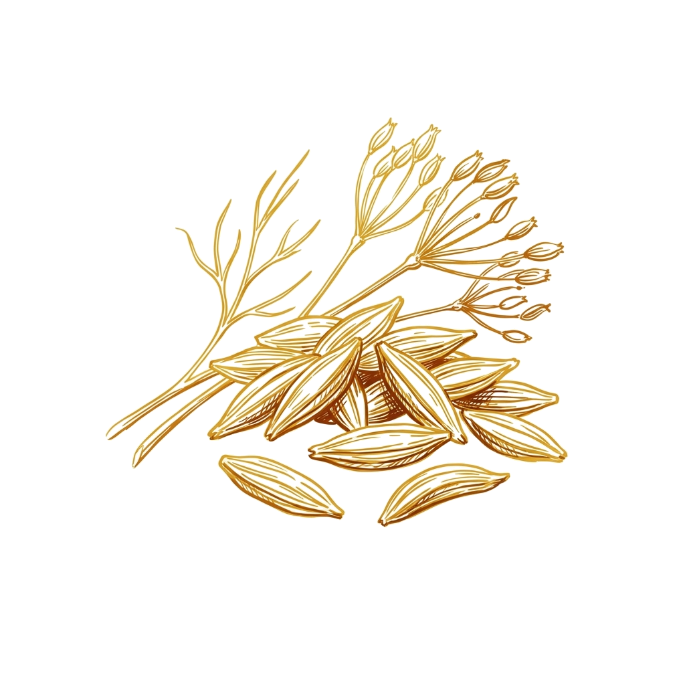
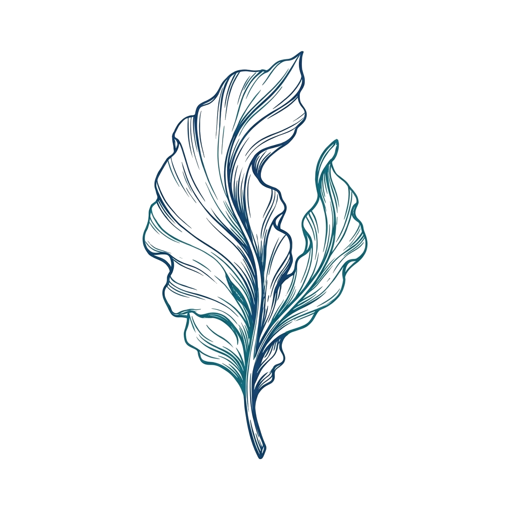
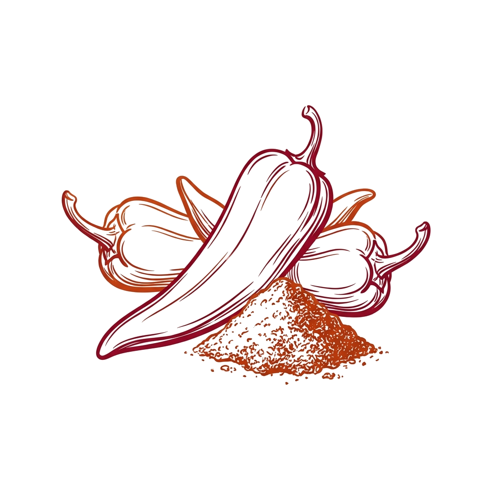
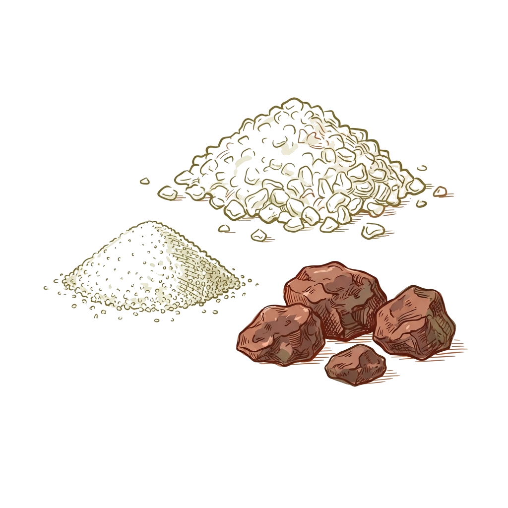
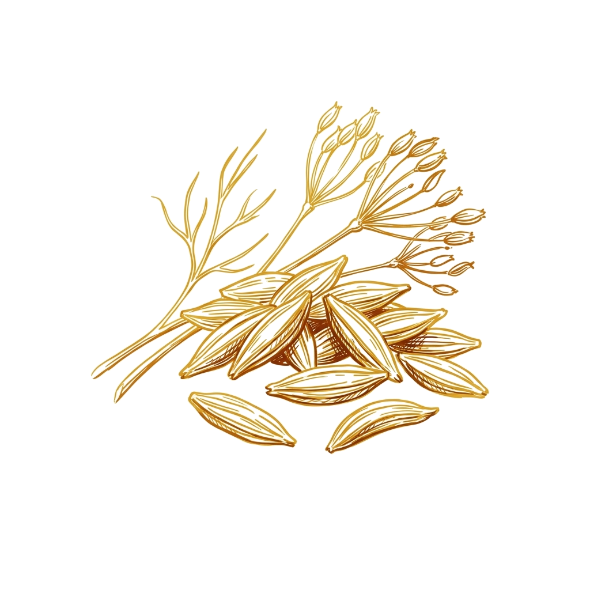

המנה נגזרת מהמילה הערבית לחריף, חריימה הוא מאכל צפון אפריקאי בסיסי וחריף. גרסה טבעונית זו מחליפה את הדג בקציצות טופו ואצות וואקמה עשירות בטעם. הקציצות נאפות עד להתייצבות ואז מתבשלות ברוטב פיקנטי של עגבניות, פלפלים ושום לארוחת שבת מושלמת.
Derivado de la palabra árabe para caliente, el Chraime es un plato básico picante del norte de África. Esta versión vegana reemplaza el pescado con sabrosas albóndigas de tofu y algas llamadas ktzi'tzot. Se hornean hasta que estén firmes y luego se cocinan a fuego lento en una salsa picante de tomates, pimientos y ajo para una comida de Shabat perfecta.
كلمة شرايمي جاية من كلمة حار، وهو طبق حار معروف في شمال إفريقيا. هذي النسخة النباتية تبدل الحوت بكفتة معمولة من التوفو والأعشاب البحرية باش تعطي بنة البحر. نطيبوهم في الفور لين يشدوا رواحهم، ومبعد نرجعوهم يطيبوا في مرقة حارة بالطماطم والفلفل والثوم، عشاء سبت مثالي.
Derived from the Arabic word for hot, Chraime is a spicy North African staple. This vegan version replaces fish with savory tofu and seaweed patties called ktzi'tzot. They are baked until firm and then simmered in a piquant sauce of tomatoes, peppers, and garlic for a perfect Shabbat meal.

 







- 600 g de tofu extra firme, prensado para eliminar líquido
- 12 g de harina de almendra
- 20 g de algas wakame, rehidratadas y picadas
- 5 g de sal
- 4.5 g de ajo en polvo
- 3 g de harina común
- 2.5 g de comino molido
- 45 ml de aceite vegetal
- 3 g de cúrcuma molida
- 7 g de pimentón dulce
- Sal al gusto
- 4 tomates, cortados en cubitos
- 1 pimiento rojo, cortado en tiras
- 5 dientes de ajo, laminados
- 1 manojo de cilantro fresco, picado
- 1.Exprima la mayor cantidad de líquido posible del tofu.
- 2.Coloque el tofu, las algas wakame, 1 cucharadita de sal, el ajo en polvo, la harina y el comino en un procesador de alimentos. Pulse para combinar.
- 3.Agregue gradualmente la harina de almendra mientras procesa. No procese por más de 2 minutos en total para mantener la textura.
- 4.Deje reposar la mezcla durante 5-10 minutos. Mientras tanto, precaliente el horno a 250°C.
- 5.Con las manos mojadas, forme hamburguesas con la mezcla. Colóquelas en una bandeja para hornear, rocíe o cepille ligeramente con aceite y hornee por 10 minutos.
- 6.Para hacer la salsa: Caliente aceite en una sartén ancha. Agregue la cúrcuma, el pimentón y una pizca de sal al aceite caliente para abrir las especias.
- 7.Agregue los tomates cortados en cubitos, el pimiento en tiras, el ajo fresco laminado y el cilantro picado.
- 8.Cocine a fuego medio hasta que las verduras se ablanden y suelten sus jugos para formar una salsa. Si es necesario, agregue una pequeña cantidad de agua.
- 9.Una vez que la salsa esté lista, agregue suavemente las albóndigas horneadas a la sartén y cúbralas con la salsa antes de servir.
- 600 גרם טופו קשה מאוד, סחוט מנוזלים
- 12 גרם קמח שקדים
- 20 גרם אצות וואקמה, מושרות וקצוצות
- 5 גרם מלח
- 4.5 גרם אבקת שום
- 3 גרם קמח רגיל
- 2.5 גרם כמון טחון
- 45 מ"ל שמן צמחי
- 3 גרם כורכום טחון
- 7 גרם פפריקה מתוקה
- מלח לפי הטעם
- 4 עגבניות, חתוכות לקוביות
- 1 פלפל אדום, חתוך לרצועות
- 5 שיני שום, פרוסות
- 1 צרור כוסברה טרייה, קצוצה
- 1.סחטו כמה שיותר נוזלים מהטופו.
- 2.הניחו את הטופו, אצות הוואקמה, כפית מלח, אבקת שום, קמח וכמון במעבד מזון. עבדו בפולסים לאיחוד.
- 3.הוסיפו בהדרגה את קמח השקדים תוך כדי עיבוד. אל תעבדו יותר מ-2 דקות בסך הכל כדי לשמור על המרקם.
- 4.הניחו לתערובת לנוח למשך 5-10 דקות. בינתיים, חממו תנור ל-250 מעלות צלזיוס.
- 5.בידיים רטובות, צרו קציצות מהתערובת. הניחו על תבנית אפייה, רססו או הברישו קלות בשמן, ואפו במשך 10 דקות.
- 6.להכנת הרוטב: חממו שמן במחבת רחבה. הוסיפו את הכורכום, הפפריקה וקורט מלח לשמן החם כדי לפתוח את התבלינים.
- 7.הוסיפו את העגבניות הקצוצות, רצועות הפלפל, השום הפרוס והכוסברה הקצוצה.
- 8.בשלו על אש בינונית עד שהירקות מתרככים ומגירים נוזלים ליצירת רוטב. במידת הצורך, הוסיפו מעט מים.
- 9.כשהרוטב מוכן, הוסיפו בעדינות את הקציצות האפויות למחבת וצפו אותן ברוטב לפני ההגשה.
- 2.5 cups extra firm tofu, pressed to remove liquid
- 2 tbsp almond flour
- 2 tbsp wakame seaweed, rehydrated and chopped
- 1 tsp salt
- 1.5 tsp garlic powder
- 1 tsp all-purpose flour
- 1 tsp cumin, ground
- 3 tbsp vegetable oil
- 1 tsp turmeric, ground
- 1 tbsp paprika, sweet
- Salt to taste
- 4 tomatoes, diced
- 1 red bell pepper, sliced into strips
- 5 garlic cloves, sliced
- 1 bunch fresh cilantro, chopped
- 1.Squeeze as much liquid as possible out of the tofu.
- 2.Place the tofu, wakame seaweed, 1 tsp salt, garlic powder, flour, and cumin in a food processor. Pulse to combine.
- 3.Gradually add the almond flour while processing. Do not process for more than 2 minutes total to maintain texture.
- 4.Let the mixture rest for 5-10 minutes. Meanwhile, preheat the oven to 250°C (480°F).
- 5.With wet hands, form the mixture into patties. Place on a baking sheet, spray or brush lightly with oil, and bake for 10 minutes.
- 6.To make the sauce: Heat oil in a wide pan. Add the turmeric, paprika, and a pinch of salt to the hot oil to open the spices.
- 7.Add the diced tomatoes, sliced bell pepper, sliced fresh garlic, and chopped cilantro.
- 8.Cook over medium heat until the vegetables soften and release their juices to form a sauce. If needed, add a small amount of water.
- 9.Once the sauce is ready, gently add the baked patties to the pan and coat with sauce before serving.
- 2.5 كيسان توفو يابس برشا، معصور من الماء
- 2 مغارف دقيق لوز
- 2 مغارف أعشاب بحرية (واكامي)، منفخة ومقصوصة
- 1 مغرفة صغيرة ملح
- 1.5 مغرفة صغيرة ثوم مرحي
- 1 مغرفة صغيرة فرينة
- 1 مغرفة صغيرة كمون
- 3 مغارف زيت نباتي
- 1 مغرفة صغيرة كركم
- 1 مغرفة فلفل أحمر (بابريكا)
- ملح حسب الذوق
- 4 كعبات طماطم، مقصوصين
- 1 فلفل أحمر، مقصوص شرائح
- 5 سنات ثوم، مقصوصين
- 1 ربطة كسبر أخضر، مقصوص
- 1.اعصر التوفو مليح باش تخرج منو الماء الكل.
- 2.حط التوفو، والأعشاب البحرية، ومغرفة صغيرة ملح، وثوم مرحي، وفرينة، وكمون في الرحاية. رحيهم شوية لين يتخلطوا.
- 3.زيد دقيق اللوز بشوية وانت ترحي. ما ترحيش أكثر من دقيقتين باش القوام يقعد باهي.
- 4.خلي الخليط يرتاح 5-10 دقايق. وفي الوقت هذاكا، سخن الفور لـ 250 درجة.
- 5.بل يديك بالماء وشكل كعابر (كفتة). حطهم في طبق الفور، ادهنهم بشوية زيت، وطيبهم 10 دقايق.
- 6.باش تحضر المرقة: سخن الزيت في طنجرة واسعة. زيد الكركم، والفلفل الأحمر، وشوية ملح في الزيت السخون باش تفوح الريحة.
- 7.زيد الطماطم المقصوصة، وشرائح الفلفل، والثوم المقصوص، والكسبر.
- 8.طيب على نار متوسطة لين الخضرة تذبل وتخرج ماها وتولي مرقة. كان لازم، زيد شوية ماء.
- 9.كيف تحضر المرقة، حط الكفتة اللي طابت في الفور بشوية في الطنجرة وخلطها بالمرقة قبل ما تقدمها.